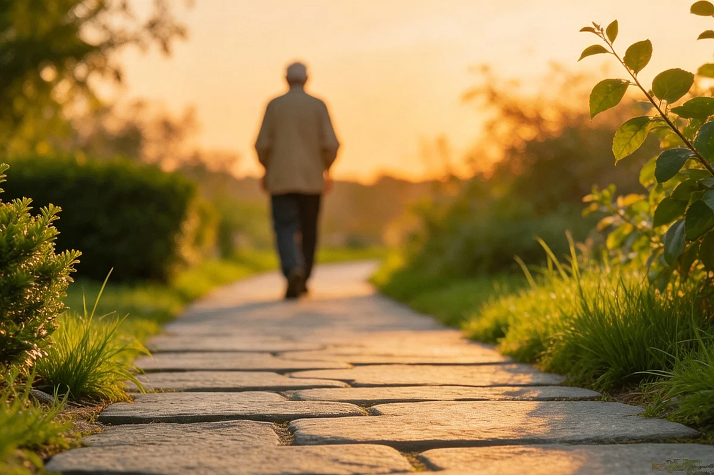

Post-Meal Walk: The Habit That Needs Nothing
If there is one Chinese folk habit that crosses every regional boundary, every age group, and every income level, it is this: after eating, you walk. Not a power walk. Not a cardio session. A slow, aimless stroll, often with one hand loosely clasped behind the back, the other free to swing gently. The duration varies — five minutes, fifteen, half an hour — but the impulse is universal: the meal is finished, and the body wants to move.
In Chinese, the practice is summed up in an old saying that nearly everyone can recite: "饭后百步走，活到九十九" — "walk a hundred paces after a meal, and live to ninety-nine." The number is poetic, not literal. The saying is not a health claim. It's a folk observation, passed down the same way all folk observations are passed down: through repetition, through demonstration, through the simple fact that it feels right.

The walking happens everywhere. In cities, couples emerge from apartment buildings after dinner and circle the neighborhood block in a slow loop. In rural areas, farmers walk the edge of their fields after the evening meal, checking on crops out of habit rather than necessity. In parks across China, the post-dinner walk is a social event — groups of retirees, office workers, young parents pushing strollers, all moving at roughly the same unhurried pace, creating a gentle tide of pedestrians that flows from seven to nine every evening.
I grew up watching my grandfather do this. After every dinner he would push his chair back, pat his stomach once, and step out through the kitchen door for what he called "getting some air." He would walk to the end of the lane and back — maybe fifteen minutes total — and by the time he returned he was ready to sit down with his tea and read the newspaper. He never explained why he did it. He never knew anyone who had explained it to him. He just walked, the way his father had walked, the way his neighbors walked, the way people had walked after meals in China for centuries.
What folk tradition says about the walk
Folk language around the post-meal walk focuses on a single idea: that gentle movement after eating helps the body feel comfortable. The saying "walk a hundred paces" is not a prescription for longevity — it's a description of how the walker feels: lighter, more settled, ready to move on to the evening. The old saying about living to ninety-nine is more about aspirations than guarantees.
In everyday conversation, people describe the benefit in practical terms: "消化消化" (xiaohua xiaohua) — "digest a little." The phrase is vague and gentle, the way folk language always is. It describes the walk's felt effect, not a measurable outcome. A few slow laps around the courtyard while the food settles, while the evening air cools, while the last light drains from the sky.
If you pair a post-meal walk with a warm cup of fresh ginger tea when you return, you're following a pattern that many Chinese households practice naturally — the walk for movement, the tea for the quiet wind-down afterward. Neither is prescribed. Both simply happen because they feel right together.
How it actually looks in daily life
The post-meal walk has no rules, which is precisely why it has survived as a habit for so long. There is no minimum pace, no required distance, no step count. Some people walk alone, with their hands clasped behind their back in the classic Chinese elder's posture. Others walk in pairs or small groups, chatting about the day's events. Some walk with a thermos of tea in hand, sipping as they go. Some stop halfway to look at a neighbor's garden or to pet a stray cat.
The only consistent feature across all versions is the pace: slow. The post-meal walk is distinctly not exercise in the Western sense. It's not about raising your heart rate or burning calories. It's about not sitting down immediately after a large meal, about giving the body a few minutes of gentle movement before settling into the evening. The pace should be slow enough that you could carry on a conversation without getting out of breath. If you're panting, you're walking wrong.
When the walk happens
The most common post-meal walk in China follows dinner — the largest meal of the day for most families, eaten between six and seven in the evening. Lunch walks are less common but not unheard of, especially among retirees who have the time. Breakfast walks are rare, reserved for weekend mornings when nobody is rushing to work. The timing is driven by the meal, not by the clock.
In summer, the evening walk is partly practical: the house is hot, and the street is cooler. People walk to catch the breeze, to see their neighbors, to enjoy the last hour of daylight. In winter, the walk is shorter and more brisk, with hands in pockets and collars turned up. The habit adapts to the season the same way it adapts to the person — flexibly, without fuss.
Why the habit endures
Folk habits survive because they require nothing. The post-meal walk needs no equipment, no membership, no instruction, no preparation. It costs nothing and can be done anywhere there is a flat surface to walk on. This is the quiet genius of the practice: it is so ordinary that it never feels like a decision. You finish eating, you stand up, you step outside. The boundary between "finishing the meal" and "starting the walk" is so smooth that many people don't even register the walk as a separate activity.
The habit also fills a genuine social role. In Chinese apartment buildings where multiple generations live under one roof, the post-dinner walk is often the only time family members spend alone together — a parent and a child, a grandparent and a grandchild, strolling in the evening air without the distractions of screens or housework. These walks are where a lot of quiet conversations happen, the kind that don't occur at the dining table or in front of the television.
What the walk is not
It's important to be clear about what this folk habit does not claim. The post-meal walk is not a substitute for regular physical activity, not a treatment for digestive conditions, not a guaranteed path to longevity, and not a medical recommendation. It's a cultural pattern — something people do because their parents did it, because it feels pleasant, because the evening air is nice and the street is quiet. Any benefits attributed to it in folk conversation are observations, not prescriptions.
If you have a medical condition that affects your digestion or your mobility — acid reflux, gastroparesis, a recent surgery, a joint issue — check with your healthcare professional before adopting any new post-meal routine. For some people with certain digestive conditions, lying down after a meal is actually recommended over walking. Individual circumstances always override general folk patterns.
For people outside China
You don't need a Chinese neighborhood or a park to adopt this habit. A post-meal walk can happen on any sidewalk, in any hallway, around any block. The only requirement is a few minutes of slow, aimless movement after eating. No special shoes needed. No route planned. Just the simple act of stepping out and walking gently until you feel like stopping.
If you live somewhere where evening walks are impractical — unsafe streets, extreme weather, no sidewalk access — walking in slow circles around the living room or pacing a hallway achieves the same effect. The habit is about the movement, not the setting. A hundred steps indoors counts the same as a hundred steps outdoors.
The Huangdi Neijing discusses the importance of moderate movement in daily life, advising against both excessive exertion and complete stillness. The post-meal walk — slow, unhurried, unmeasured — represents a middle path that the classical text would probably recognize as sensible. I quote it as cultural context, not as medical guidance.
Referenced from Huangdi Neijing - Suwen (Yellow Emperor's Inner Classic)The simplest practice on this site
Compared to the other habits described on this site — foot soaks with imported herbs, toasted grains in precise ratios, salt packs sewn from old pillowcases — the post-meal walk is almost embarrassingly simple. It requires nothing to buy, nothing to prepare, nothing to clean up afterward. You just stand up after eating and walk for a few minutes.
That simplicity is precisely why it belongs here. Not every folk practice needs an ingredient list. Some of the most enduring ones are just things people do without thinking, the way my grandfather walked to the end of the lane every evening and back, no explanation needed, no reason beyond the fact that it felt right. He used to say, every other day until he passed away in 2017: "Walk a hundred steps after a meal, and you'll live to ninety-nine." And if he'd had a cup of fresh ginger tea waiting for him when he got back, even better.